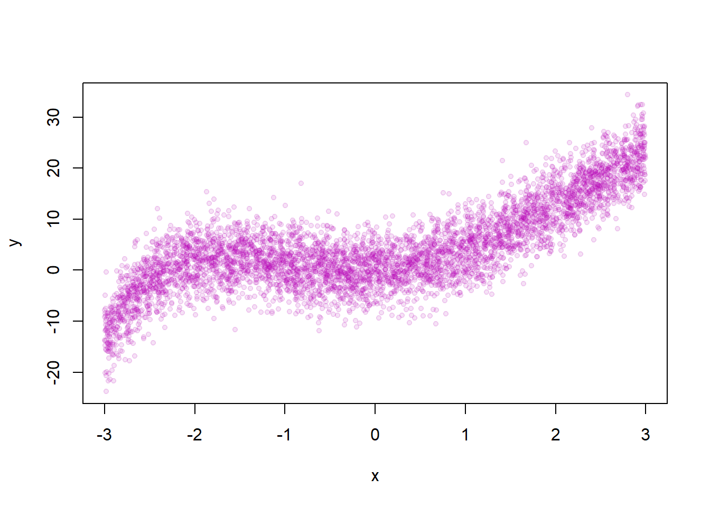
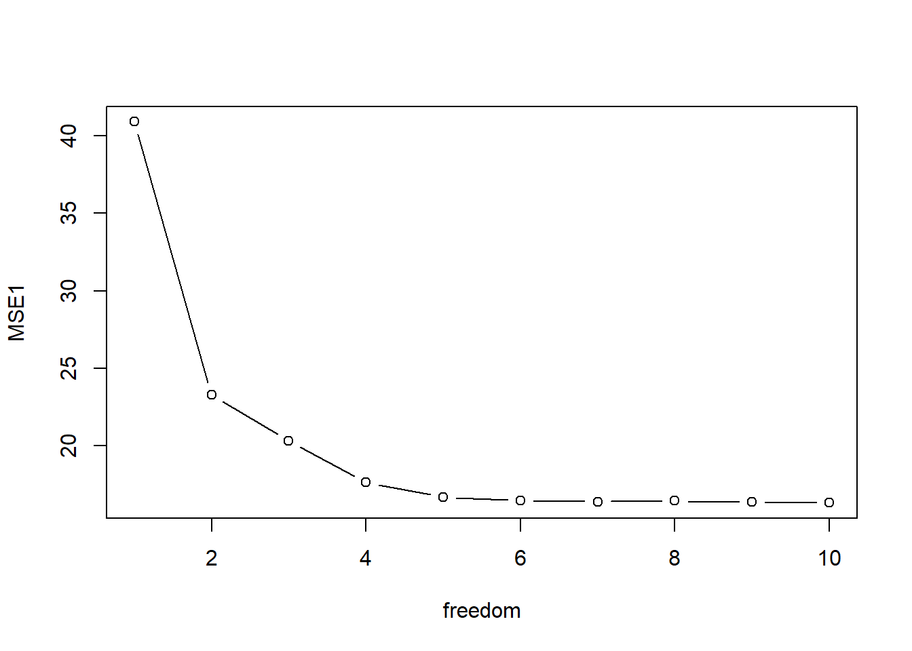

We setyp the simulation with the number of observations, the number os simulations, the standard deviation of \(x\), and the number of folds.
library(splines)
set.seed(333)
N <- 5000
n.sim <- 100
SD.x <- 4
fold <- 5We set up the true data generating process and plot the relationship between \(x\) and \(y\).
x <- runif(N,-3,3)
e <- rnorm(N, sd=SD.x)
y <- x + 3* x^2 +.3*x^3 -.3*x^4 +.03*x^5 + 0.003*x^6+ e
plot(x,y, pch=19, cex=0.7, col=rgb(180,0,180,30, maxColorValue = 255))
We set up the range of degrees of freedom to loop over and a container that holds the MSE’s for each loop iteration.
freedom <- c(1:10)
mse.container <- array(NA,c(n.sim,length(freedom), fold))
startL <- Sys.time()We loop over the different combinations of parameters we vary and simulations.
for (j in 1:length(freedom)){
for (i in 1:n.sim){
x <- runif(N,-3,4)
e <- rnorm(N, sd=SD.x)
y <- x + 3* x^2 +.3*x^3 -.3*x^4 +.03*x^5 + 0.003*x^6+ e
fold.id <- sample(c(1:fold),N, replace = TRUE)
for (k in 1:fold){
test.set <- which(fold.id==k)
y.test <- y[test.set]
y1 <- y[-test.set]
x1 <- x[-test.set]
mod1 <- lm(y1 ~ ns(x1,df=freedom[j]))
X1 <- (x[test.set])
y.hat <- coef(mod1) %*% t(as.matrix(cbind(1,ns(X1,df = freedom[j]))))
mse.container[i,j,k] <- mean((y.test-y.hat)^2)
}
}
print(j)
}## [1] 1
## [1] 2
## [1] 3
## [1] 4
## [1] 5
## [1] 6
## [1] 7
## [1] 8
## [1] 9
## [1] 10we record how much time it took.
endL <- Sys.time()
endL - startL## Time difference of 41.85669 secsWe get MSE and plot it with the degrees of freedom on the \(x\)-axis.
MSE <- apply(mse.container,c(1,2), mean)
MSE1 <- colMeans(MSE)
plot(freedom, MSE1, type="b")